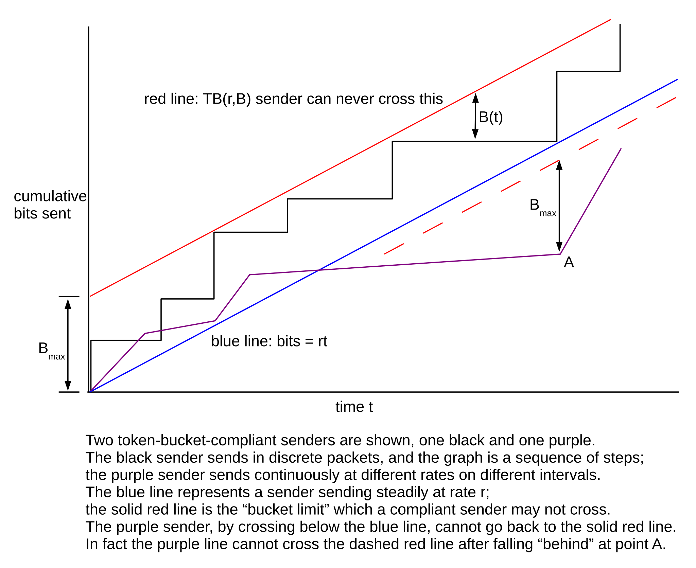

24 Token Bucket Rate Limiting¶
The token-bucket algorithm provides an alternative to fair queuing (23.5 Fair Queuing) for providing a traffic allocation to each of several groups. The main practical difference between fair queuing and token bucket is that if one sender is idle, fair queuing distributes that sender’s bandwidth among the other senders. Token bucket does not: the bandwidth a sender is allocated is a bandwidth cap.
Suppose the outbound bandwidth is 4 packets/ms and we want to allocate to one particular sender, A, a bandwidth of 1 packet/ms. We could use fair queuing and give sender A a bandwidth fraction of 25%, but suppose we do not want A ever to get more bandwidth than 1 packet/ms. We might do this, for example, because A is paying a reduced rate, and any excess available bandwidth is to be divided among the other senders.
The catch is that we want the flexibility to allow A’s packets to arrive at irregular intervals. We could simply wait 1 ms after each of A’s packets begins transmission, before the next can begin, but this may be too strict. Suppose A has been dutifully submitting packets at 1ms intervals and then the packet that was supposed to arrive at T=6ms instead arrives at T=6.5. If the following packet then arrives on time at T=7, does this mean it should now be held until T=7.5, etc? Or do we allow A to send one late packet at T=6.5 and the next at T=7, on the theory that the average rate is still 1 packet/ms?
The latter option is generally what we want, and the solution is to define A’s quota in terms of a token-bucket specification, which allows for specification of both an average rate and also a burst capacity. The implemented token-bucket specification is often called a token-bucket filter.
If a packet does not meet the token-bucket specification, it is non-compliant; we can do any of the following things:
- delay the packet until the bucket is ready
- drop the packet
- mark the packet as non-compliant
The first option here is often called shaping; the second, more authoritarian option is sometimes known as policing. When packet marking is used, the marked packets are sometimes sent at lower priority, and sometimes are dropped preferentially by some downstream router.
Note that, of the three approaches here, dropping and marking are the most straightforward to implement. Delaying packets requires creating a place to store them, and an algorithm for resending them at the appropriate time.
Policing is generally appropriate only at the point when the traffic enters the network (eg at the user/ISP interface), where the traffic generator still has more-or-less full control over the packet spacing. Further downstream, congestion delays may lead to packet bunching, which may lead to violations of the token-bucket specification that are unfair to blame on the traffic generator.
Another use for token-bucket specifications is as a theoretical traffic description, rather than a rule to be enforced; in this context compliance is a non-issue.
A token-bucket filter can be thought of as a queuing discipline, with an underlying FIFO queue. If non-compliant packets are delayed, it is non-work-conserving. Dropping non-compliant packets can be viewed as an alternative to tail-drop. The queuing-discipline definition in 23.4 Queuing Disciplines does not provide for marking packets, but this is a straightforward extension.
24.1 Token Bucket Definition¶
The idea behind a token bucket is that there is a notional bucket somewhere, being filled at a steady rate with tokens (or, if more divisibility is needed, with fluid); any overflow from the bucket is discarded. To send a packet, we need to be able to take one token from the bucket; if the bucket is empty then the packet is non-compliant and must suffer special treatment as above. If the bucket is full, however, then the sender may send a burst of packets corresponding to the bucket capacity (at which point the bucket will be empty).
A common variation is requiring one token per byte rather than per packet, with the fill rate correspondingly scaled; this allows packet size to be taken into account.
More precisely, a token-bucket specification TB(r,Bmax) includes a token fill rate of r tokens/sec, representing the rate at which the bucket fills with tokens, and also a bucket capacity (or depth) Bmax>0. The bucket fills at the rate specified, subject to a maximum of Bmax; we will denote the current capacity by B, or by B(t) if we need to specify the time. In order for a packet of size S (possibly S=1 for counting size in units of whole packets) to be within the specification, the bucket must have at least S tokens; that is, B≥S. Otherwise the packet is non-compliant. When the packet is sent, S tokens are removed from the bucket, that is, B=B−S. It is possible for the packets of a given flow all to be compliant with a given token-bucket specification at one point (eg one router) in the network but not at another point; this can happen, for example, if more than Bmax packets pile up at a downstream router due to momentary congestion.
The following graph is a visual representation of a token-bucket constraint. The black and purple curves plotted are of cumulative bits sent as a function of time, that is, bits(t). When bits(t) is horizontal, the sender is idle.

The blue line represents a sender sending linearly at the rate r, with no burstiness. At vertical distance Bmax above the blue line is the red line. Graphs for compliant senders cannot cross this, because that would entail a burst of more than Bmax above the blue line; we give a more formal argument below. As a sender’s graph approaches the red line, the sender’s current bucket contents decreases; the instantaneous bucket contents for the black sender is shown at one point as B(t).
The purple sender has fallen below the blue line at one point; as a result, it can never catch up. In fact, after passing through the vertex at point A the purple graph can never cross the dashed red line. A proof is in 24.6.1 Token Bucket Queue Utilization, following some numeric token-bucket examples that illustrate how a token-bucket filter works.
If a packet arrives when there are not enough tokens in the bucket to send it, then as indicated above there are three options. The sender can engage in shaping, making the packet wait until sufficient tokens accumulate. The sender can engage in policing, dropping the packet. Or the sender can send the packet immediately but mark it as noncompliant.
One common strategy is to send noncompliant packets – as marked in the third option above – with lower priority. Alternatively, marked packets may face a greater chance of being dropped by some downstream router. In ATM networks (5.5 Asynchronous Transfer Mode: ATM) the cell-loss priority bit is often used to mark noncompliant packets.
Token-bucket specifications supply a framework for making decisions about admission control: a router can decide whether to accept a new connection (or whether to accept the connection’s quality-of-service request) based on the requested rate and bucket (queue) requirements.
Token-bucket specifications are the mirror-image equivalent to leaky-bucket specifications, in which the fluid leaks out of the leaky bucket at rate r and to send a packet we must add S units without overflowing. The two forms are completely equivalent.
So far we have been using token-bucket specifications to describe traffic; eg traffic arriving at a router. It is also possible to use token buckets to describe the router itself; in this setting, the leaky-bucket formulation may be clearer. The router’s queue represents the bucket, and the router’s packet transmissions represent tokens leaking out of the bucket. Arriving packets are added to the bucket; a bucket overflow represents lost packets. We will not pursue this interpretation further.
24.2 Token-Bucket Examples¶
Suppose the token-bucket specification is TB(1/3 packet/ms, 4 packets), and packets arrive at the following times, with the bucket initially full:
0, 0, 0, 2, 3, 6, 9, 12
After all the T=0 packets are processed, the bucket holds 1 token. By the time the fourth packet arrives at T=2, the bucket volume has risen to 1 2/3; it immediately drops to 2/3 when packet 4 is sent. By T=3, the bucket volume has reached 1 and the fifth packet can be sent. The bucket is now empty, but fortunately the remaining packets arrive at 3-ms intervals and can all be sent.
In the next set of packet arrival times, again with TB(1/3,4), we have three bursts of four packets each.
0, 0, 0, 0, 12, 12, 12, 12, 24, 24, 24, 24
Each burst empties the bucket, which then takes 12 ms to refill. All packets are compliant.
In the following set of packet arrival times, still with TB(1/3,4), the burst of four packets at T=0 drains the bucket. At T=3 the bucket size has increased back to 1, allowing the packet that arrives then to be sent but also draining the bucket again.
0, 0, 0, 0, 3, 6, 12, 12
At T=6 the same thing happens. From T=6 to T=12 the bucket contents rise from 0 to 2, allowing the two packets arriving at T=12 to be sent.
Finally, suppose packets arrive at the following times at our TB(1/3,4) filter.
0, 1, 2, 3, 4, 5
We can also represent this in tabular form as follows; note that for the noncompliant packet the bucket is not decremented.
| packet arrival | 0 | 1 | 2 | 3 | 4 | 5 |
|---|---|---|---|---|---|---|
| bucket just before | 4 | 3 1/3 | 2 2/3 | 2 | 1 1/3 | 2/3 |
| bucket just after | 3 | 2 1/3 | 1 2/3 | 1 | 1/3 | 2/3 |
24.3 Multiple Token Buckets¶
It often makes sense to require that a sender comply with two (or more) separate token-bucket specifications. We can think of these being applied to the traffic sequentially. Often one filter will specify a peak rate, with a small bucket size, and the other will specify an average rate, with a larger bucket size. Consider, for example, the following pair:
- TB(1 packet/ms, 1.5 packets)
- TB(1/5 packet/ms, 6 packets)
The first specification, meant to apply to the peak rate, mandates 1 ms on average between packets, but packets can be only 0.5 ms early without being noncompliant. The second specification, meant to apply over the longer term, states that on average there will be 5 ms between packets, subject to a burst of 6. The following is compliant, assuming both buckets are initially full.
0, 1, 2.5, 3, 4, 5, 6, 10, 15, 20
The first seven packets arrive at 1 ms intervals (the rate of the first filter) except for the packet that arrived at T=2.5 instead of T=2. The sender was allowed to send again at T=3 instead of waiting until T=3.5 because the bucket size in the first filter was 1.5 instead of 1.0. Here are the packet arrivals with the current size of each bucket at the time of packet arrival, just before the bucket is decremented. At T=2.0, the filter2 bucket would be 4.4.
| arrival: | T=0 | T=1 | T=2.5 | T=3 | T=4 | T=5 | T=6 | T=10 | T=15 | T=20 |
|---|---|---|---|---|---|---|---|---|---|---|
| Filter 1: | 1.5 | 1.5 | 1.5 | 1.0 | 1.0 | 1.0 | 1.0 | 1.5 | 1.5 | 1.5 |
| Filter 2: | 6 | 5.2 | 4.5 | 3.6 | 2.8 | 2 | 1.2 | 1.0 | 1.0 | 1.0 |
If we move up each packet in time to the first point when both buckets have reached 1.0, we get the fastest compliant sequence for this pair of filters. This is the sequence generated by a token-bucket shaper when there is a steady backlog of packets and each is sent as soon as the bucket capacity (or capacities, when applicable) is full enough to allow sending. After T=0, the filter1 bucket returns to capacity 1.0 at T=0.5. Continuing, the filter1 bucket allows for additional transmissions at T=1.5, T=2.5, T=3.5, T=4.5 and T=5.5. At this point filter2 becomes the limiting factor; its bucket is at 0.1 after the T=5.5 packet is sent and does not return to 1.0 until T=10.0. We get the following:
| arrival: | T=0 | T=0.5 | T=1.5 | T=2.5 | T=3.5 | T=4.5 | T=5.5 | T=10 | T=15 | T=20 |
|---|---|---|---|---|---|---|---|---|---|---|
| Filter 1: | 1.5 | 1.0 | 1.0 | 1.0 | 1.0 | 1.0 | 1.0 | 1.5 | 1.5 | 1.5 |
| Filter 2: | 6 | 5.1 | 4.3 | 3.5 | 2.7 | 1.9 | 1.1 | 1.0 | 1.0 | 1.0 |
24.4 GCRA¶
Another formulation of the token-bucket specifications is the Generic Cell Rate Algorithm, or GCRA; this formulation is frequently used in classification of ATM traffic. A GCRA specification takes two parameters, a mean packet spacing time T, and an early-arrival allowance 𝜏. For each packet we compute a theoretical arrival time, tat, initially zero. A packet may arrive earlier by amount at most 𝜏. Specifically, if t is the time of actual arrival, we have two cases:
- t ≥ tat−𝜏: the packet is compliant, and we update tat to max(t,tat) + T
- t < tat−𝜏: the packet is too early and is noncompliant; tat is unchanged.
A flow satisfying GCRA(T,𝜏) is equivalent to a token-bucket specification with rate 1/T packets/unit time, and bucket size (𝜏+1)/T; tat represents the time the bucket would next be full. The time to fill an empty bucket is 𝜏+1; if the bucket becomes full at time tat then, working backwards, it would contain enough to send one packet at time tat−𝜏.
For traffic flows with a more-or-less constant rate, 𝜏 represents the time by which one packet can be late without permanently falling behind its regular 1/T rate. The GCRA formulation is sometimes more convenient than the token-bucket formulation, particularly when 𝜏<T.
24.4.1 Applications of Token Bucket¶
Unlike fair queuing, token-bucket filtering can be implemented at the downstream end of a link, though possibly with results not quite in agreement with expectations. Let us return to the final scenario of 23.6 Applications of Fair Queuing:

While fair queuing cannot be applied at R to enforce equal shares to A, B and C, we can implement a token-bucket filter at R that limits each of A, B and C to 2 Mbps.
There are two drawbacks. First, the filter is not work-conserving: if A is idle, B and C will still only receive 2 Mbps. Second, in the absence of feedback there is no guarantee that limiting the traffic at R will eventually result in reduced utilization of the ISP⟶R link. While this is true for TCP traffic, due to the self-clocking property, it is conceivable that a sender D somewhere is trying to send 8 Mbps of real-time UDP traffic to A, via ISP and R. Three-quarters of the traffic would then fail to be compliant, and might be dropped by R, but unless D gets feedback from A that not much of the traffic is getting through, and that it should reduce its sending rate, the token-bucket filter at R will not achieve what we want. Most protocols do provide this kind of feedback, but not all.
24.5 Guaranteeing VoIP Bandwidth¶
As a particular instance of the previous situation, suppose we have an Internet connection from our ISP and want to begin using VoIP for telephony. We would like to reserve something like 64 kbps of bandwidth for one VoIP line (plus room for headers), so that large downloads do not degrade voice quality. We can easily do this for the upstream direction, either with fair or priority queuing; priority queuing will not lead to starvation of other traffic as the total VoIP traffic is limited by the number of lines.
However, the downstream direction may be more of a problem, if we are unable to enlist the ISP to apply fair or priority queuing at their end. As we argued in 23.6 Applications of Fair Queuing, fair queuing at the downstream end of a congested link has no effect. A queue buildup at the ISP’s end of the link will mean that incoming VoIP traffic has to wait in line with traffic from other downloads, and may never receive the bandwidth it requires. And it is more than likely that the router at the ISP’s end has a rather large queue, meaning relatively extensive waiting times. We need to limit the total downstream traffic, but are limited to traffic manipulations at the downstream end.
Token-bucket can provide an answer here. The idea is to limit the aggregate bandwidth of the non-VoIP traffic entering the site, leaving some room for the VoIP traffic. We create at the downstream site entrance (node TBF in the diagram below) a token-bucket filter that applies only to non-VoIP traffic (this feature is represented by the dashed “VoIP bypass” path). The filter’s rate limit will be the total download bandwidth minus a reservation for VoIP; for example, if we knew that the total bandwidth was 500 bits/ms we might reserve 100 bits/ms, say, for VoIP traffic by having the token-bucket filter limit delivery of non-VoIP download traffic to 400 bits/ms. In the diagram below, the token-bucket filter is represented conceptually by the large red dot; the short red segment represents the virtual (not physical) “bottleneck link” for the non-VoIP traffic.
Unfortunately, we encounter three problems. The first is that if no VoIP traffic is flowing then we probably do not want the 400 bits/ms cap on other traffic; we might arrange this by applying the cap only when the phone is in use, or by setting aside a small enough bandwidth fraction that it does not have a material affect on overall bulk bandwidth. The second problem is the (remote) possibility discussed in the previous example that the sender might keep sending anyway, at 500 bits/ms; our downstream token-bucket filter can throw away as many bits as it wants but the ISP-to-site link will still be saturated. Third, it is often quite difficult to determine exactly what the bandwidth of a particular Internet connection is. Especially if, as is often the case, it is shared, or configured to change with time, or subject to a large-bucket token-bucket cap by the ISP.
Fortunately, typical VoIP bandwidth needs are low enough that one can often muddle through without providing any quality-of-service guarantees at all. This remains, however, a good example of the difficulties often faced by real-time traffic.
24.6 Limiting Delay¶
Now let’s repeat the previous example, but instead of trying to guarantee VoIP bandwidth, we will instead attempt to limit the total queuing delay. This may mean that, in the presence of large downloads, VoIP traffic will get only 50 bits/ms, but there should be little if any queuing at the ISP’s router.
Again, we create a token-bucket filter at the site entrance, and set it to limit the total rate of incoming traffic to just below the download link bandwidth. If packets can arrive at 1,000 kbps, we might set the token-bucket rate to 900 kbps, or perhaps even a little higher. This means that the bottleneck link in the downstream direction will now be the “virtual” link from the downstream token-bucket filter to the rest of the site, shown in red in the diagram of the previous section. A queue will then build up at this token-bucket filter, at the red dot in the diagram above. However, at least in the steady state for TCP traffic, the queue will not build at the ISP’s end.
The next step is to enable CoDel, 21.5.6 CoDel, to manage this queue in front of the token-bucket filter. CoDel achieves this by dropping traffic until the queue has an appropriate size. The end result will be that downstream traffic encounters no queue at the ISP’s end (again assuming a TCP steady state), and at most a modestly sized CoDel-regulated queue at the site’s end. Not only have we limited the waiting time for VoIP traffic, we have limited queuing delays for all traffic.
In exchange, we are giving up 100% utilization of the downstream link, though if delay is causing significant problems this may be a reasonable tradeoff. It also means CoDel will be throwing away traffic that has already made it to our site, but, in the long run, that may be well worth it.
If the ISP limits download bandwidth via a token-bucket filter with a significant bucket, as many do in order to accommodate burstiness, we can copy their upstream bucket size at our downstream end.
24.6.1 Token Bucket Queue Utilization¶
Suppose traffic meeting token-bucket specification TB(r,Bmax) arrives at a router R, with no competition from other traffic. The bucket fill rate r corresponds to the minimum outbound link bandwidth needed by R to guarantee that the traffic does not build up; we do not want traffic on average arriving faster than it can depart.
Intuitively, the bucket size Bmax corresponds to the amount of queue space at R that the flow can consume. To make this more precise, we will argue that, if the output rate from R is at least r, then the number of untransmitted bits stored at R is never more than Bmax.
To show this more formally, we start by proving the “red line lemma” implicit in the discussion of the graph in 24.1 Token Bucket Definition above, that the sender can never cross the red line. Specifically, assume the flow satisfies TB(r,Bmax) and has a full bucket at time t=0. Let bits(t) be the cumulative number of bits sent (packetized or not) by time t. The blue line is the graph bits = rt and the red line is the graph bits = rt + Bmax; we show the following:
bits(t) <= rt + Bmax
We first prove this so long as the graph is above the blue line; that is, bits(t) >= rt. We claim that the right-hand side minus the left-hand side above, rt + Bmax - bits(t), represents the volume B(t) of fluid (or tokens) in the bucket. Equating and rearranging slightly, we need to show B(t) + bits(t) - rt is always equal to Bmax. This is true at t=0 when bits(t) = rt = 0 and the bucket is full. We next establish that its rate of change is also 0, and so it is constant.
While the bucket is not full, B(t) is always being filled at rate r. Correspondingly, rt is increasing at rate r, so B(t) - rt is not affected by the fill rate. Similarly, B(t) is being reduced at exactly the rate bits(t) is increasing. If we use the packet formulation, then when a packet arrives B(t) is reduced by the packet size and bits(t) increases by exactly the same amount.
This does not quite apply when bits(t) falls below the blue line. However, we have nothing to prove then. If bits(t) has a later interval above the blue line, starting at time t1, we can reapply the argument above re-starting the clock and the bits counter at t=t1.
In fact, we can argue that whenever the bits(t) graph passes through a point below the blue line, such as point A in the diagram above, then bits(t) cannot in the future climb above the new red line (the dashed red line in the diagram) Bmax units above point A.
24.7 Token Bucket Through One Router¶
We now return to the claim about accumulation at a router R with outbound flow at least r; as before, let bits(t) represent the cumulative amount of data received. As long as bits(t) is above the blue line, the router can continuously transmit at rate r and the net number of bits held within the router is bits(r) - rt. By the argument above, this is bounded by Bmax. If bits(t) falls below the blue line, the router’s queue is empty and the router can transmit incoming data at least as fast as it is arriving.
While R can never be holding more than Bmax bytes, at the instant just before a packet finishes transmission it can have Bmax bytes in the queue, plus the currently transmitting packet still taking up an entire buffer. As a practical matter, then, we may need space equal to Bmax plus one packet.
While a token-bucket specification does not include a delay bound specifically, we can compute an upper bound to the queuing delay at a router R as Bmax/r; this is the time it takes for one full bucket’s worth of packets to be transmitted.
If we have N flows each individually satisfying TB(r,B), then the collective traffic will satisfy TB(Nr, NB) (see exercise 1.0). However, a bucket size of NB will be needed only when all N individual flows have their bursts “gang up” at a particular instant. Often it is possible to take advantage of theoretical or empirical statistical information and conclude that the collective traffic “most of the time” meets a token-bucket specification TB(Nr, BN) for BN significantly less than NB.
24.8 Token Bucket Through Multiple Routers¶
If we have a single TB(r,Bmax) flow through N routers, however, the queuing delay is not larger than for a single router, again assuming no competition. More specifically, assume that the traffic flow arrives at router R1 satisfying TB(r,B), and passes in turn through R1 to RN. Each router Ri has an outbound bandwidth at least as large as r. Then the total queuing delay through all N routers remains Bmax/r. If the packets pile up to the maximum size Bmax, they only do so once.
To prove this we compare the TB sequence of packets with the same sequence of packets sent at a steady rate r through the same series of routers. If the last bit of packet k is the Nth bit since we began, then for the steady stream we send packet k at time N/r. We assume the link rates are all reduced to r.
Let t=0 represent the time we start counting bits. For every n, we established above that the nth bit of the TB packet flow can be transmitted at most Bmax/r seconds ahead of the nth steady-stream bit, which is sent at time n/r. The steady-stream packets do not encounter queuing delays at all, as each router has always finished the previous one. The TB packets can each arrive no later than the steady-stream packets, as they were sent earlier and they cannot cross. Therefore, the maximum delay faced by any TB packet is Bmax/r, exactly as for traffic through a single router.
24.9 Delay Constraints¶
If a traffic flow arriving at a router R is compliant for token-bucket specification TB(r,B), then as we showed above the amount of R’s queue space used by the flow will be bounded by B so long as R can devote at least rate r to the flow’s traffic.
Now let us add a real-time delay constraint: suppose that R is not to be allowed to delay any of the flow’s packets by more than time D. For the time being, assume that there is no other traffic at R. We now need to make sure that R has sufficient bandwidth to forward a bucketful of size B within the time interval D. To send a burst of size B in time D, bandwidth B/D is needed. Therefore, to satisfy the real-time constraint, R needs outbound bandwidth
s = max(r, B/D)
Example 1: suppose the traffic specification is TB(1/3, 10), where the rate is in (equal-sized) packets/µsec, and D is 40 µsec. Then B/D is 1/4 packets/µsec, and the necessary outbound bandwidth s is simply r=1/3.
Example 2: now suppose in the previous example that the delay limit D is 20 µsec. In this case, we need s = B/D = 1/2 packets/µsec.
If there is other traffic, the delay constraint still holds, provided s represents the bandwidth allocated by R to the flow, and the flow’s packets receive priority service at R, and we first subtract the largest-packet delay as in 7.3.2 Packet Size and Real-Time Traffic.
Calculations of this sort often play a role in a router’s decision on whether to accept a reservation for an additional TB(r,B) flow with associated delay constraint.
24.9.1 Hierarchical Token Bucket¶
Token-bucket filters can also be used to form a hierarchy, as in 23.7.1 Generic Hierarchical Queuing. In this section we will assume that token bucket is used only for shaping; that is, delaying packets until the bucket has sufficiently filled. As usual, packets will remain in the leaf FIFO queues until they are ready to be transmitted.
Central to the hierarchy is the conceptual time each internal token-bucket node releases its next packet; that is, becomes able to inform its parent node (when asked) that it has a packet ready to send, even if the packet physically remains waiting in one of the leaf queues. If a node N is informed by a child node that a packet has been released and N’s bucket has sufficient capacity, then N releases the packet in turn to its parent immediately; otherwise N waits until its bucket fills sufficiently to make the packet compliant. When a packet arrives at a leaf node, it will be progressively released by each node along the path to the root; when it is released by the root node it can be sent.
To make token-bucket filters classful, we will assume that each node may have multiple input subqueues, but treats these as if they were consolidated into a single FIFO subqueue. That is, the node releases packets to its parent in the order they were released to the node by its children.
Leaf nodes can mark each packet with its release time at the moment of arrival. Interior nodes may only be able to determine their release times for packets that have been released by their child nodes.
It is now straightforward to define the peek() operation of 23.7.1 Generic Hierarchical Queuing: a node looks at the set of packets it has released and returns the one with the earliest release time.
In a token-bucket hierarchy it makes a sense to say that two child flows have bucket sizes of 200 and 300, respectively, while the combined flow is to be limited to a bucket size of 400.
The following diagram illustrates an example of a token-bucket hierarchy. The three token-bucket filters TB1, TB2 and TB3 have rates in packets/ms and bucket sizes in packets.
If TB1’s rate is, as here, less than the sum of its child rates, then as long as its children always have packets ready to send, the children will receive bandwidth in proportion to their token bucket rates. In the example above, TB1’s rate is 4 packets/ms and yet the sum of the rates of its children is 5 packets/ms. Each child will therefore receive 4/5 its promised rate: TB2 will send at a rate of 2×(4/5) packets/ms while TB3 will send at rate of 3×(4/5) packets/ms.
To see this, assume FIFO2 and FIFO3 remain nonempty for a period long enough for their buckets to empty. TB2 and TB3 will then each release packets to TB1 at their respective rates of 2 packets/ms and 3 packets/ms. In the following sequence of release times to TB1, we assume TB3 starts at T=0 and TB2 at T=0.01, to avoid ties. Packets from A released by TB2 are shown in italic:
0, 0.01, .33, 0.51, .67, 1.0, 1.01, 1.33, 1.51, 1.67, 2.0, 2.01
They will be dequeued by TB1 at 4 packets/ms, once TB1’s bucket is empty. In the long run, TB3 has released three packets into this sequence for every two of TB2’s, so sender B will receive 3/5 of the dequeuings, and thus 3/5 of the 4 packet/ms root bandwidth.
We can also have each token-bucket node physically forward released packets to FIFO queues attached to each parent node; we called this an internal-storage hierarchy in 23.7 Hierarchical Queuing. In this particular case, the leaf-storage and internal-storage mechanisms function identically, provided the internal links are infinitely fast and the internal queues infinitely large. See exercise 6.0.
There is no point in having a node with a bucket larger than the sum of its child buckets and also a rate larger than the sum of its child rates. In the example above, in which the sum of the child rates exceeds the parent rates, A would be able to send at a sustained rate of 2 packets/ms provided B sends at only 2 packets/ms as well; reducing the child rates to 2×(4/5) and 3×(4/5) packets/ms respectively is not equivalent. If a node’s rate is larger than the sum of the child rates, then it will be able to handle the child traffic without delay once the child buckets have emptied. Before that, though, the parent bucket may be the limiting factor.
24.9.2 Fair Queuing / Token Bucket combinations¶
At first glance, combining fair queuing with token bucket might seem improbable: the goal of fair queuing is to be work-conserving, allowing the bandwidth assigned to an idle input class to be divided among the active input classes, and the goal of token bucket is generally to limit a class to its token-bucket-defined maximum transmission rate. The usual approach to a hierarchy-based synthesis is to allow the administrator to decide, at each node of the hierarchy, whether or not the node can “borrow” (without repayment) bandwidth from inactive siblings. If it can, the set of siblings with mutual borrowing privileges resembles a fair-queuing scheduler; if not, the node is more like a token-bucket scheduler.
24.10 CBQ¶
CBQ was introduced in [CJ91] and analyzed in [FJ95]. It did not actually use the token-bucket mechanism, but instead implemented shaping by keeping track of the average idle time (more precisely, non-transmitting time) for a given input class. Input classes that tried to send too much were restricted, unless the node was permitted to “borrow” bandwidth from a sibling. When an input class sent less than it was allowed, its average utilization would fall; if a burst arrived then it would take some time for the average to “catch up” and thus the node could briefly send faster than its assigned rate. However, the size of the implicit “bucket” could be controlled only indirectly.
24.11 Linux HTB¶
The Linux HTB queuing discipline, part of the Traffic Control (tc) system, allows the same general functionality of CBQ, but replaces the average-idle calculations with token-bucket filters. This permits more direct control of burst sizes, and also avoids some technical timing issues that CBQ users had to watch out for. For the sake of efficiency, HTB uses the deficit round-robin algorithm for fair queuing; as noted in 23.5.5 Deficit Round Robin, this means less precise control over packet delay.
Although the HTB name comes from “hierarchical token bucket”, it is best viewed as primarily an implementation of hierarchical weighted fair queuing (23.8 Hierarchical Weighted Fair Queuing). In fact, HTB doesn’t actually implement “hierarchical token bucket”; token buckets are for shaping, and HTB does shaping only at the leaf nodes of the hierarchy. The higher-level, or interior, nodes are present only to create the hierarchy for fair queuing.
Each node in the tree has the following attributes:
- its guaranteed rate, r, corresponding to the token-bucket rate
- its burst allowance B, corresponding to the bucket size
- its ceiling rate rceil; leaf nodes never send faster than this
In many cases rceil may simply be the output rate of the root node. For interior nodes, if the configured ceiling rate is less than the sum of the child rates, the child nodes can still send at their full rates; interior nodes cannot do rate-limiting. A low ceiling rate will, however, affect borrowing, below.
The most important attribute of each node is its guaranteed rate. The requested rate at each node should be at least as large as the sum of the child rates. In the following diagram, all rates are in kbps; burst allowances are not shown. We will assume the root guaranteed rate, 600 kbps, is also its ceiling rate.
Packets are marked green, yellow or red depending on their situation. Red packets are those that must wait; eventually they will turn yellow and then green.
Packets are considered green if they are now compliant (perhaps after waiting earlier) for one of the leaf token-bucket nodes; green packets are sent as soon as possible.
After L1, L2 and L3 have each emptied their buckets, they will not exhaust node N’s rate. Similarly, after N and M have emptied their buckets they will use only half of R’s rate. Nodes are allowed to “borrow” bandwidth – without payback – from their parent’s rates; packets benefiting from such borrowed bandwidth are marked yellow, and may also be sent immediately if no green packets are waiting. Borrowing is always in proportion to a node’s guaranteed rate, in the manner of fair queuing. That is, the guaranteed rates of the child nodes are treated as unnormalized fair-queuing weights; normalized weight fractions are obtained by dividing by their total. N above would have normalized weight fraction 200/(200+100) = 2/3.
If L1, L2 and L3 engage in borrowing from N, and each has traffic to send, then each gets a total bandwidth of 50, 50 and 100 kbps, respectively. If L3 is idle, then L1 and L2 each would get 100 kbps. If N and M borrow in turn from R, they each can send at 400 and 200 kbps respectively, in which case L1, L2 and L3 (again assuming all are active) get 100, 100 and 200 kbps. If M elects not do do any borrowing, because it has nothing to send, then N will get 600 kbps and L1, L2 and L3 will get 150, 150 and 300.
If fair-queuing behavior is not desired, we can set rceil = r so that a node can never send faster than its guaranteed rate. This allows HTB to model the token-bucket-only hierarchy of 24.9.1 Hierarchical Token Bucket.
A working example of HTB, with one parent and two child nodes, is constructed in 30.8 Linux Traffic Control (tc).
24.12 Parekh-Gallager Theorem¶
As a final example relating token-bucket specifications and fair queuing, we present the Parekh-Gallager Theorem, which provides a precise queuing-delay bound on traffic that enters a network meeting a token-bucket specification TB(r,B) and which has a guaranteed weighted-fair-queuing fraction through each router along the path.
Specifically, let us assume that the traffic travels from sender A to destination B through N routers R1 … RN. The output rate of the ith router Ri is ri, of which our flow is guaranteed rate fi≤ri. Let f = min {fi|i<N}. Suppose the maximum packet size for packets in our flow is S, and the maximum packet size including competing traffic is Smax. Then the total delay encountered by the flow’s packets is bounded by the sum of the following:
- propagation delay (total single-bit delay along all N+1 links)
- B/f
- The sum from 1 to N of S/fi
- The sum from 1 to N of Smax/ri
The second term B/f represents the queuing delay introduced by a single burst of size B; we showed in 24.8 Token Bucket Through Multiple Routers that this delay bound applied regardless of the number of routers.
The third term represents the total store-and-forward delay at each router for packets belonging to our flow under GPS; the delay at Ri is S/fi.
The final term represents the degree to which fair-queuing may delay a packet beyond the theoretical GPS time expressed in the third term. If the routers were to use GPS, then the first three terms above would bound the packet delay; we established in 23.5.4.7 Finishing-Order Bound that router Ri may introduce an additional delay above and beyond the GPS delay of at most Smax/ri.
24.12.1 Epilog¶
In the previous chapter we saw that if we want to use all the outbound bandwidth, but divide it among several senders, fair queuing was the way to go. But if we want to impose an absolute rather than a relative cap on traffic, token bucket is appropriate. Sometimes caps have business justifications: customers who want more bandwidth should pay more. But sometimes, as in 24.5 Guaranteeing VoIP Bandwidth, token buckets are beneficial even if we’re really not interested in caps; they work well on the downstream router where fair queuing does not.
It is for real-time traffic, however, that queuing disciplines such as fair queuing, token bucket and even priority queuing come into their own as fundamental building blocks. These tools allow us to guarantee a bandwidth fraction to VoIP traffic, or to allow such traffic to be sent with minimal delay. In the next chapter 25 Quality of Service we will encounter fair queuing and token-bucket specifications repeatedly.
24.12.2 Exercises¶
Exercises may be given fractional (floating point) numbers, to allow for interpolation of new exercises. Exercises marked with a ♢ have solutions or hints at 34.17 Solutions for Queuing and Scheduling.
1.0. If two traffic streams meet token-bucket specifications of TB(r1,b1) and TB(r2,b2) respectively, show their commingled traffic must meet TB(r1+r2,b1+b2). Hint: imagine a common bucket of size b1+b2, filled at rate r1 with red tokens and at rate r2 with blue tokens.
2.0. For each sequence of arrival times, indicate which packets are compliant for the given token-bucket specification. If a packet is noncompliant, go on to the next arrival without decrementing the bucket.
3.0. Find the fastest sequence (see the end of 24.3 Multiple Token Buckets) for the following flows. Both start at T=0, and all buckets are initially full.
4.0. Give the fastest sequence of packets compliant for all three of the following token-bucket specifications. Continue the sequence at least until T=60.
- TB(1/2, 1)
- TB(1/6, 4)
- TB(1/12, 8)
Hint: the first specification means arrival times must always be separated by at least 2. The middle specification should kick in by T=12.
5.0. Show that if a GPS traffic flow (23.5.4 The GPS Model) satisfies a token-bucket specification TB(r,B), then in any interval of time t1≤t≤t2 the amount of traffic is at most B + r×(t2−t1). Hint: during the interval t1≤t≤t2 the amount of fluid added to the bucket is exactly r×(t2−t1).
6.0. Show that the token-bucket leaf-storage hierarchy of 24.9.1 Hierarchical Token Bucket produces the same result as an “internal-storage” hierarchy in which each intermediate token-bucket node contained a real, infinite-capacity FIFO queue, and each node instantaneously transmitted each packet to the parent’s FIFO queue as soon as it was released. Show that packets are transmitted by each hierarchy at the same times. Hint: show that each node in the leaf-storage hierarchy “releases” a packet at the same time the corresponding internal-storage hierarchy forwards the packet upwards.
7.0. The following Linux htb hierarchies are labeled with their guaranteed rates. Is there any difference in terms of the bandwidth allocations that would be received by senders A and B?
(a) (b)
R R
100 100
/ \ / \
/ \ / \
L1 L2 L1 L2
60 40 30 20
| | | |
A B A B
8.0. Suppose we know that the real-time traffic through a given router R uses at most 1 Mbps of the total 10 Mbps bandwidth. Consider the following two ways of giving the real-time traffic special treatment:
i. Using priority queuing, and giving the real-time traffic higher priority.ii. Using weighted fair queuing, and giving the real-time traffic a 10% share
9.0. In the previous exercise, now suppose we have two separate real-time flows, each guaranteed by a token-bucket specification not to exceed 1 Mbps. Is there a material difference between any pair of the following?
i. Sending the two real-time flows at priority 1, and the remaining traffic at priority 2.ii. Sending the first real-time flow at priority 1, the second at priority 2, and the remaining traffic at priority 3.iii. Giving each real-time flow a WFQ share of 10%, and the rest a WFQ share of 80%
10.0. Suppose a router uses priority queuing. There is one low-priority and one high-priority input. The outbound bandwidth is r.
Your answer may include symbolic representations of any necessary additional parameters.